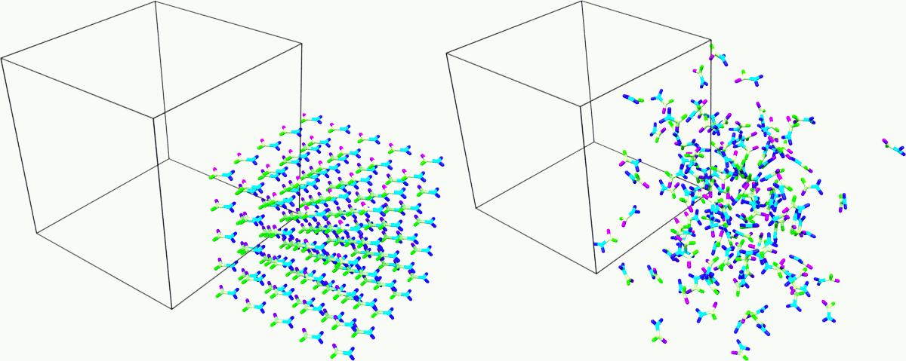
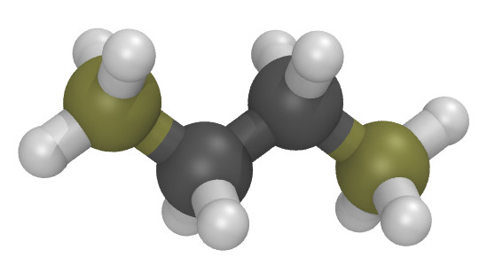
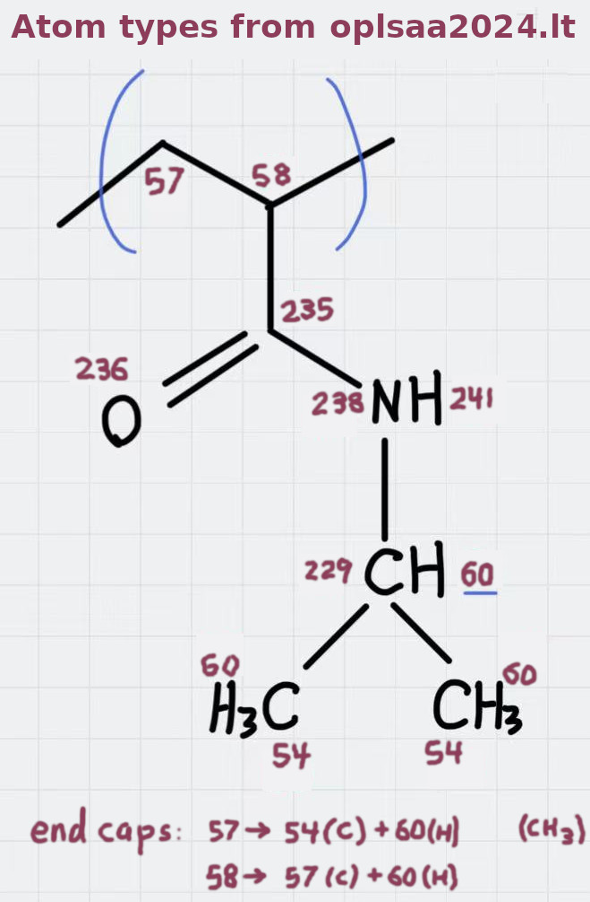
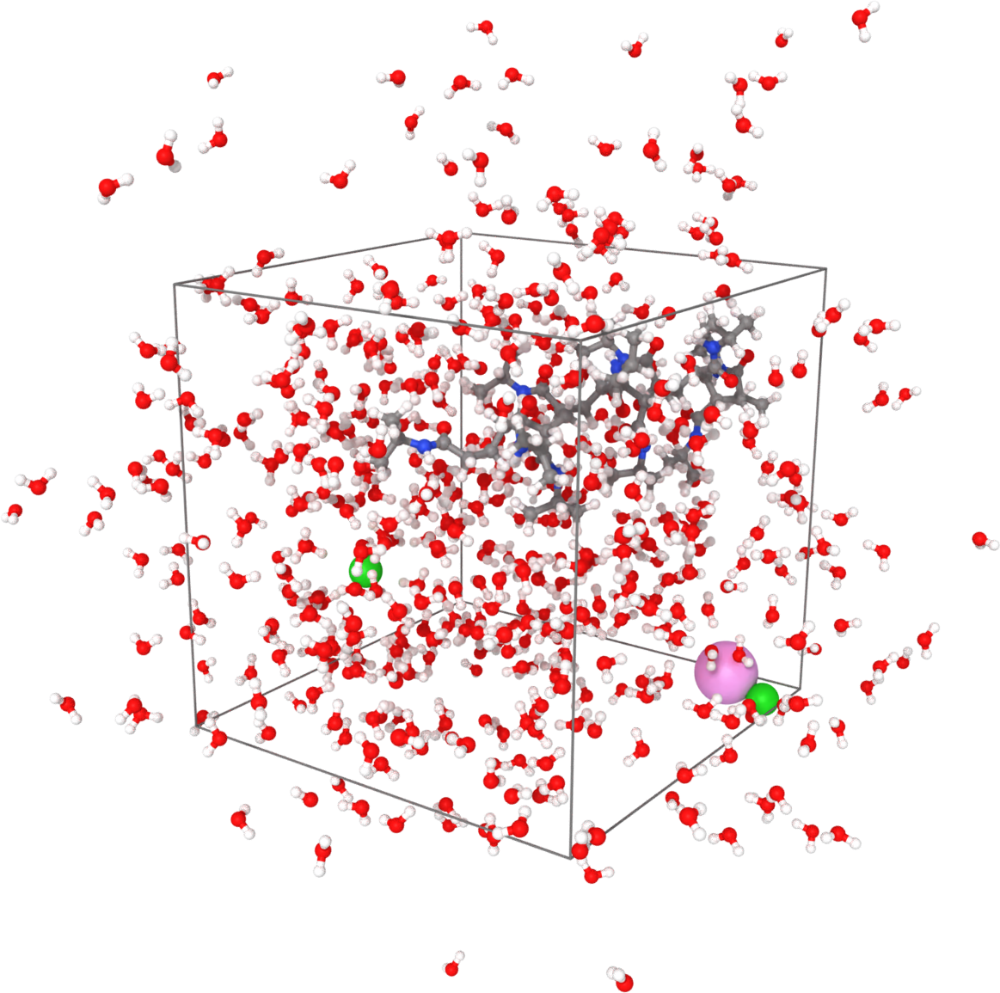

\(\renewcommand{\AA}{\text{Å}}\)
10.6.4. Moltemplate Tutorial
In this tutorial, we are going to use the tool Moltemplate from https://moltemplate.org/ to set up a classical
molecular dynamic simulation using the OPLS-AA force field. The first task is to describe an organic compound and
create a complete input deck for LAMMPS. The second task is to use
moltemplate to build a polymer. The third task is to map the OPLS-AA
force field to a molecular sample created with an external tool,
e.g. PACKMOL, and exported as a PDB file. The files used in this
tutorial can be found in the tools/moltemplate/tutorial-files folder
of the LAMMPS source code distribution.
Many more examples can be found here: https://moltemplate.org/examples.html
Simulating an organic solvent
This example aims to create a cubic box of the organic solvent formamide.
The first step is to create a molecular topology in the LAMMPS-template
(LT) file format representing a single molecule, which will be
stored in a Moltemplate object called _FAM inherits OPLSAA {}.
This command states that the object _FAM is based on an existing
object called OPLSAA, which contains OPLS-AA parameters, atom type
definitions, partial charges, masses and bond-angle rules for many organic
and biological compounds.
The atomic structure is the starting point to populate the command
write('Data Atoms') {}, which will write the Atoms section in the
LAMMPS data file. The OPLS-AA force field uses the atom_style full,
therefore, this column format is used:
# atomID molID atomType charge coordX coordY coordZ.
The atomIDs are replaced with Moltemplate $-type variables, which
are then substituted with unique numerical IDs. The same logic is applied
to the molID, except that the same variable is used for the whole
molecule. The atom types are assigned using @-type variables. The
assignment of atom types (e.g. @atom:177, @atom:178) is done using
the OPLS-AA atom types defined in the “In Charges” section of the file
oplsaa2024.lt, looking for a reasonable match with the description of the atom.
The resulting file (formamide.lt) follows:
import /usr/local/moltemplate/moltemplate/force_fields/oplsaa2024.lt # defines OPLSAA
_FAM inherits OPLSAA {
# atomID molID atomType charge coordX coordY coordZ
write('Data Atoms') {
$atom:C00 $mol @atom:235 0.00 0.100 0.490 0.0
$atom:O01 $mol @atom:236 0.00 1.091 -0.250 0.0
$atom:N02 $mol @atom:237 0.00 -1.121 -0.181 0.0
$atom:H03 $mol @atom:240 0.00 -2.013 0.272 0.0
$atom:H04 $mol @atom:240 0.00 -1.056 -1.190 0.0
$atom:H05 $mol @atom:279 0.00 0.144 1.570 0.0
}
# A list of the bonds in the molecule:
# BondID AtomID1 AtomID2
write('Data Bond List') {
$bond:C1 $atom:C00 $atom:O01
$bond:C2 $atom:C00 $atom:H05
$bond:C3 $atom:C00 $atom:N02
$bond:C4 $atom:N02 $atom:H03
$bond:C5 $atom:N02 $atom:H04
}
}
You don’t have to specify the charge in this example because the OPLSAA force-field assigns charge according to the atom type. (This is not true when using other force fields.) A “Data Bond List” section is needed as the atom type will determine the bond type. The other bonded interactions (e.g. angles, dihedrals, and impropers) will be automatically generated by Moltemplate.
If the simulation is not charge-neutral, or Moltemplate complains that
you have missing bond, angle, or dihedral types, this probably means that
at least one of your atom types is incorrect (or that perhaps there is no
suitable atom type currently defined in the oplsaa2024.lt file).
The second step is to create a master file with instructions to build a
starting structure and the LAMMPS commands to run an NPT simulation. The
master file (solv_01.lt) follows:
import formamide.lt # Defines "_FAM" and OPLSAA
# Distribute the molecules on a 5x5x5 cubic grid with spacing 4.6
solv = new _FAM [5].move( 4.6, 0, 0)
[5].move( 0, 4.6, 0)
[5].move( 0, 0, 4.6)
solv[*][*][*].move(-11.5, -11.5, -11.5)
# Set the simulation box.
write_once("Data Boundary") {
-11.5 11.5 xlo xhi
-11.5 11.5 ylo yhi
-11.5 11.5 zlo zhi
}
# Note: The lines below in the "In Run" section are often omitted.
write_once("In Run"){
# Create an input deck for LAMMPS.
# Run an NPT simulation.
# Input variables.
variable run string solv_01 # output name
variable ts equal 1 # timestep
variable temp equal 300 # equilibrium temperature
variable p equal 1. # equilibrium pressure
variable d equal 1000 # output frequency
variable equi equal 5000 # Equilibration steps
variable prod equal 30000 # Production steps
# Derived variables.
variable tcouple equal \$\{ts\}*100
variable pcouple equal \$\{ts\}*1000
# Output.
thermo \$d
thermo_style custom step etotal evdwl ecoul elong ebond eangle &
edihed eimp ke pe temp press vol density cpu
thermo_modify flush yes
# Trajectory.
dump TRJ all dcd \$d \$\{run\}.dcd
dump_modify TRJ unwrap yes
# Thermalisation and relaxation, NPT ensemble.
timestep \$\{ts\}
fix NPT all npt temp \$\{temp\} \$\{temp\} \$\{tcouple\} iso \$p \$p \$\{pcouple\}
velocity all create \$\{temp\} 858096 dist gaussian
# Short runs to update the PPPM settings as the box shrinks.
run \$\{equi\} post no
run \$\{equi\} post no
run \$\{equi\} post no
run \$\{equi\}
# From now on, the density shouldn't change too much.
run \$\{prod\}
unfix NPT
}
The first two commands insert the content of files oplsaa2024.lt and
formamide.lt into the master file. At this point, we can use the
command solv = new _FAM [N] to create N copies of a molecule of type
_FAM. In this case, we create an array of 5*5*5 molecules on a cubic
grid using the coordinate transformation command .move( 4.6, 0, 0).
See the Moltemplate documentation to learn more about the syntax. As
the sample was created from scratch, we also specify the simulation box
size in the “Data Boundary” section.
The LAMMPS setting for the force field are specified in the file
oplsaa2024.lt and are written automatically in the input deck. We also
specify the boundary conditions and a set of variables in
the “In Init” section.
The remaining commands to run an NPT simulation
are written in the “In Run” section. Note that in this script, LAMMPS
variables are protected with the escape character \ to distinguish
them from Moltemplate variables, e.g. \$\{run\} is a LAMMPS
variable that is written in the input deck as ${run}.
(Note: Moltemplate can be slow to run, so you need to change you run
settings frequently, I recommended moving those commands (from “In Run”)
out of your .lt files and into a separate file. Moltemplate creates a
file named run.in.EXAMPLE for this purpose. You can put your run
settings and fixes that file and then invoke LAMMPS using
mpirun -np 4 lmp -in run.in.EXAMPLE instead.)
Compile the master file with:
moltemplate.sh solv_01.lt
cleanup_moltemplate.sh # <-- optional: see below
(Note: The optional “cleanup_moltemplate.sh” command deletes unused atom types, which sometimes makes LAMMPS run faster. But it does not work with many-body pair styles or dreiding-style h-bonds. Fortunately most force fields, including OPLSAA, don’t use those features.)
Then execute the simulation with the following:
mpirun -np 4 lmp -in solv_01.in -l solv_01.log

Snapshot of the sample at the beginning and end of the simulation. Rendered with Ovito.
Building a simple polymer
Moltemplate is particularly useful for building polymers (and other molecules with sub-units). As an simple example, consider butane:

The butane.lt file below defines Butane as a polymer containing
4 monomers (of type CH3, CH2, CH2, CH3).
import /usr/local/moltemplate/moltemplate/force_fields/oplsaa2024.lt # defines OPLSAA
CH3 inherits OPLSAA {
# atomID molID atomType charge coordX coordY coordZ
write("Data Atoms") {
$atom:c $mol:... @atom:54 0.0 0.000000 0.4431163 0.000000
$atom:h1 $mol:... @atom:60 0.0 0.000000 1.0741603 0.892431
$atom:h2 $mol:... @atom:60 0.0 0.000000 1.0741603 -0.892431
$atom:h3 $mol:... @atom:60 0.0 -0.892431 -0.1879277 0.000000
}
# (Using "$mol:..." indicates this object ("CH3") is part of a larger
# molecule. Moltemplate will share the molecule-ID with that molecule.)
# A list of the bonds within the "CH3" molecular sub-unit:
# BondID AtomID1 AtomID2
write('Data Bond List') {
$bond:ch1 $atom:c $atom:h1
$bond:ch2 $atom:c $atom:h2
$bond:ch3 $atom:c $atom:h3
}
}
CH2 inherits OPLSAA {
# atomID molID atomType charge coordX coordY coordZ
write("Data Atoms") {
$atom:c $mol:... @atom:57 0.0 0.000000 0.4431163 0.000000
$atom:h1 $mol:... @atom:60 0.0 0.000000 1.0741603 0.892431
$atom:h2 $mol:... @atom:60 0.0 0.000000 1.0741603 -0.892431
}
# A list of the bonds within the "CH2" molecular sub-unit:
# BondID AtomID1 AtomID2
write('Data Bond List') {
$bond:ch1 $atom:c $atom:h1
$bond:ch2 $atom:c $atom:h2
}
}
Butane inherits OPLSAA {
create_var {$mol} # optional:force all monomers to share the same molecule-ID
# - Create 4 monomers
# - Move them along the X axis using ".move()",
# - Rotate them 180 degrees with respect to the previous monomer
monomer1 = new CH3
monomer2 = new CH2.rot(180,1,0,0).move(1.2533223,0,0)
monomer3 = new CH2.move(2.5066446,0,0)
monomer4 = new CH3.rot(180,0,0,1).move(3.7599669,0,0)
# A list of the bonds connecting different monomers together:
write('Data Bond List') {
$bond:b1 $atom:monomer1/c $atom:monomer2/c
$bond:b2 $atom:monomer2/c $atom:monomer3/c
$bond:b3 $atom:monomer3/c $atom:monomer4/c
}
}
Again, you don’t have to specify the charge in this example because OPLSAA assigns charges according to the atom type.
This Butane object is a molecule which can be used anywhere other molecules
can be used. (You can arrange Butane molecules on a lattice, as we did previously.
You can also modify individual butane molecules by adding or deleting atoms or bonds.
You can add bonds between specific butane molecules or use Butane as a
sub-unit to define even larger molecules. See the moltemplate manual for details.)
How to build a complex polymer
A similar procedure can be used to create more complicated polymers, such as the NIPAM polymer example shown below. For details, see:
Mapping an existing structure
Another helpful way to use Moltemplate is mapping an existing molecular sample to a force field. This is useful when a complex sample is assembled from different simulations or created with specialized software (e.g. PACKMOL). (Note: The previous link shows how to build this entire system from scratch using only moltemplate. However here we will assume instead that we obtained a PDB file for this system using PACKMOL.)
As in the previous examples, all molecular species in the sample
are defined using single-molecule Moltemplate objects.
For this example, we use a short polymer in a box containing
water molecules and ions in the PDB file model.pdb.
It is essential to understand that the order of atoms in the PDB file and in the Moltemplate master script must match, as we are using the coordinates from the PDB file in the order they appear. The order of atoms and molecules in the PDB file provided is as follows:
500 water molecules, with atoms ordered in this sequence:
ATOM 1 O MOL D 1 5.901 7.384 1.103 0.00 0.00 DUM ATOM 2 H MOL D 1 6.047 8.238 0.581 0.00 0.00 DUM ATOM 3 H MOL D 1 6.188 7.533 2.057 0.00 0.00 DUM
1 polymer molecule.
1 Ca2+ ion.
2 Cl- ions.
In the master LT file, this sequence of molecules is matched with the following commands:
# Create the sample.
wat=new SPC[500]
pol=new PolyNIPAM[1]
cat=new Ca[1]
ani=new Cl[2]
Note that the first command would create 500 water molecules in the same position in space, and the other commands will use the coordinates specified in the corresponding molecular topology block. However, the coordinates will be overwritten by rendering an external atomic structure file. Note that if the same molecule species are scattered in the input structure, it is recommended to reorder and group together for molecule types to facilitate the creation of the input sample.
The molecular topology for the polymer is created as in the previous example, with the atom types assigned as in the following schema:
{kind=link}

Atom types assigned to the polymer’s repeating unit.
The molecular topology of the water and ions is stated directly into the master file for the sake of space, but they could also be written in a separate file(s) and imported before the sample is created.
The resulting master LT file defining short annealing at a fixed volume (NVT) follows:
# Use the OPLS-AA force field for all species.
import /usr/local/moltemplate/moltemplate/force_fields/oplsaa2024.lt
import PolyNIPAM.lt
# Define the SPC water and ions as in the OPLS-AA
Ca inherits OPLSAA {
write("Data Atoms"){
$atom:a1 $mol:. @atom:412 0.0 0.00000 0.00000 0.000000
}
}
Cl inherits OPLSAA {
write("Data Atoms"){
$atom:a1 $mol:. @atom:401 0.0 0.00000 0.00000 0.000000
}
}
SPC inherits OPLSAA {
write("Data Atoms"){
$atom:O $mol:. @atom:9991 0. 0.0000000 0.00000 0.0000000
$atom:H1 $mol:. @atom:9990 0. 0.8164904 0.00000 0.5773590
$atom:H2 $mol:. @atom:9990 0. -0.8164904 0.00000 0.5773590
}
write("Data Bond List") {
$bond:OH1 $atom:O $atom:H1
$bond:OH2 $atom:O $atom:H2
}
}
# Create the sample.
wat=new SPC[500]
pol=new PolyNIPAM[1]
cat=new Ca[1]
ani=new Cl[2]
# Periodic boundary conditions:
write_once("Data Boundary"){
0 26 xlo xhi
0 26 ylo yhi
0 26 zlo zhi
}
write_once("In Init"){
boundary p p p # "p p p" is the default. This line is optional.
neighbor 3 bin # (This line is also optional in this example.)
}
# Note: The lines below in the "In Run" section are often omitted.
# Run an NVT simulation.
write_once("In Run"){
# Input variables.
variable run string sample01 # output name
variable ts equal 2 # timestep
variable temp equal 298.15 # equilibrium temperature
variable p equal 1. # equilibrium pressure
variable equi equal 30000 # equilibration steps
# Set the output.
thermo 1000
thermo_style custom step etotal evdwl ecoul elong ebond eangle &
edihed eimp pe ke temp press atoms vol density cpu
thermo_modify flush yes
compute pe1 all pe/atom pair
dump TRJ all custom 100 \$\{run\}.dump id xu yu zu c_pe1
# Minimise the input structure, just in case.
minimize .01 .001 1000 100000
write_data \$\{run\}.min
# Set the constrains.
group watergroup type @atom:9991 @atom:9990
fix 0 watergroup shake 0.0001 10 0 b @bond:spcO_spcH a @angle:spcH_spcO_spcH
# Short annealing.
timestep \$\{ts\}
fix 1 all nvt temp \$\{temp\} \$\{temp\} \$(100*dt)
velocity all create \$\{temp\} 315443
run \$\{equi\}
unfix 1
}
In this example, the water model is SPC and it is defined in the
oplsaa2024.lt file with atom types @atom:9991 and @atom:9990. For
water we also use the group and fix shake commands with
Moltemplate @-type variables, to ensure consistency with the
numerical values assigned during compilation. To identify the bond and
angle types, look for the extended @atom IDs, which in this case
are:
replace{ @atom:9991 @atom:9991_bspcO_aspcO_dspcO_ispcO }
replace{ @atom:9990 @atom:9990_bspcH_aspcH_dspcH_ispcH }
From which we can identify the following “Data Bonds By Type”:
@bond:spcO_spcH @atom:*_bspcO*_a*_d*_i* @atom:*_bspcH*_a*_d*_i*
and “Data Angles By Type”:
@angle:spcH_spcO_spcH @atom:*_b*_aspcH*_d*_i* @atom:*_b*_aspcO*_d*_i* @atom:*_b*_aspcH*_d*_i*
Compile the master file with:
moltemplate.sh -pdb model.pdb sample01.lt
cleanup_moltemplate.sh
And execute the simulation with the following:
mpirun -np 4 lmp -in sample01.in -l sample01.log

Sample visualized with Ovito loading the trajectory into the DATA file written after minimization.
(OPLS-AA) Jorgensen, W.L., Ghahremanpour, M.M., Saar, A., Tirado-Rives, J., J. Phys. Chem. B, 128(1), 250-262 (2024).
(Moltemplate) Jewett et al., J. Mol. Biol., 433(11), 166841 (2021)